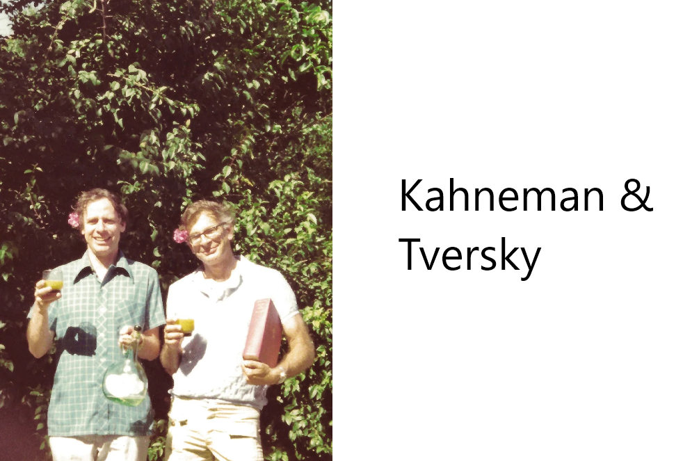
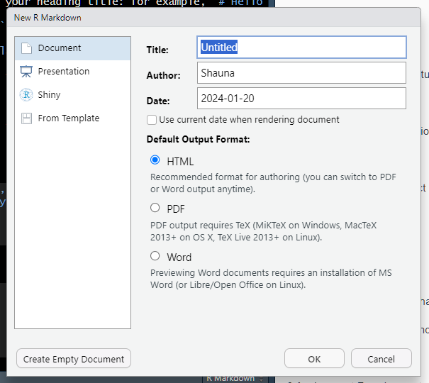

Chapter 2 The Assignment

Amos Tversky (left) and Daniel Kahneman (right) wrote some articles that challenged well-established theories in Psychology that have had an impact well beyond the discipline of psychology (e.g. economics).
Assignment outline
The assignment consists of two parts.
PART I
Find one of K&T’s original research papers by using Google Scholar or the Laurentian Omni library. Next, find 9 more studies that each build on the study before. So, your first study will be a Kahneman and Tversky study, next, a study that sits on the shoulders of that study, then another that progressed from that study, and so on until you find a study conducted between 2020 and today. A minimum of 10 articles should be cited. As Dr. Emond says, “Kind of like six degrees of separation but with citations”.
PART II
Next, you will choose ONE of T&K’s theories and design an experiment to test it.
Your final submission will include:
- A brief introduction to the topic, explaining the theory you are exploring and referencing the article(s) it is based on. You will place this in the intro section of the R Markdown document.
- State your hypothesis and any other questions you would like to answer clearly.
- Operationally define your independent variable(s) and dependent variable(s). Keep in mind you should choose a design that demonstrates your understanding of the concepts learned in class. A factorial design will blow our socks off.
- Describe your design and procedure clearly in the Methods section.
- Do not forget to explain how you will control for any confounding variables.
- Create some data you might expect your design would produce. You might be thinking whhaaat? Don’t worry, I will help with this part! No need to worry about it yet, first do your research, write up your intro and methods and THEN we’ll create the data.
- Once you have your data, you will dig into analyses with R. When here, you will follow a tutorial that will teach you how to visualize your data and conduct your analysis (ANOVA, correlations or anything else your heart desires).
- You will create a data visualization that conveys your main results.
- You will BRIEFLY summarise your findings in a mini Results section.
- Finally, you will write a very brief conclusion wrapping it all up and including at least two sentences that include two things you learned or didn’t learn during this assignment!
For all of the parts above, complete descriptions must be given. In full detail. Also, you must justify all of your choices. Why you decided to design it the way you did and define your variables the way you did.
2.1 Keep in Mind
This assignment is meant to give you a taste of producing reproducible research with R. You will learn to conduct your analyses and write up in R so at the end you have lovely little document that includes everything a person would need to reproduce your experiment. You will hand in a pdf copy of your report, which will include your data. Don’t worry about HOW we’ll do this yet, just know that you will.
Now, after you’ve found your studies and chosen your theory, there are a couple of ways you can tackle this:
Do your write up in Word first, then copy and paste it into R when you’re ready.
Do what I do, write directly in R.
HOWEVER, because R can be intimidating and confusing at first and I don’t want you losing hours of work with a mistake, it might be smart to have a copy of your write up in Word or Google Docs, just in case! Once you get the knack of R you’ll never have to use Word as back up again. But for now, it might give you peace of mind and its very easy to copy and paste your write up directly into R. It’s what I did in the beginning and it worked like a charm.
Remember: if you have ANY trouble with this assignment, don’t hesitate to reach out sheron@laurentian.ca . We could always set up a zoom meeting or I could meet you at Laurentian to help trouble shoot any issues. I’m here to help and in fact LOVE helping students–just don’t wait until the last minute. K thanks :)
You can now head to the Getting Started with R section! Congrats!
Tutorial for Part II
Next you will download the MY_ASSIGNMENT template I created for you and copy it to the root directory of your project folder. Once copied to your project folder, from the R Studio workspace, go the file pane and select the file you just placed there. This should open the R Markdown document in your workspace. I created this document to work like a template. You can simply replace my prompts and text with your own.
R Markdown
Let’s get acquainted with your first R Markdown document. The first thing you might want to do is rename it (right-click on the tab and click rename). Try knitting the document next. Click on the Knit icon above and wait. You should see some code running by in the render window to the right. Hang tight, and if all goes well it should complete and you’ll find a pdf file with the same name in the folder of your project.
Play Around
You’ll notice that there are areas with plain text, and small codechunks. Any text in a codechunk with a hashtag in front will NOT be printed in the pdf document. Only the outputs of any functions you run from here. WARNING: you can’t have plain text in any chunk UNLESS it has a hashtag in front of it which basically tells R to ignore it. The chunks are meant to execute R code so only code should be here unless preceeded by the hashtag. Another important note: R IS CASE SENSITIVE. So, if you are copying my code or any code, you must copy the exact text including case. If something is called “df” you must call it with df, not Df or DF as R won’t find it.
If you leave random text in these chunks, it will throw an error, and the document won’t knit.
If you try to knit the document and there’s a problem, you will see an error in the render window to the right. Sometimes, it will give a clue as to where the problem is; for example, it could say that it stopped rendering around line 120. Use the line numbers to the left to find the offensive mistake! Basically, if knit fails, it is almost always because there is a problem with something you typed in a code chunk.
The following code outputs a histogram of the variable speed from the cars dataframe.
Try copy and pasting it into a chunk in your document. I’ve included one for you near the top that says ### ADD SOME CODE TO ME ###. Now, run this code chunk by clicking the little green play arrow at the top of the chunk. If it worked, you should see a little histogram below the chunk.
Now try knitting the document (Knit at top of the frame), and you should find the histogram in the pdf.
Create your own R Markdown document
Here you will find the requirements for your assignment. First, let’s create an R Markdown document so you can get started. Begin by heading to the File dropdown (top left), selecting New File and R Markdown and you’ll see the following popup:

On the left you’re going to select “From Template” and then “APA-style manucript (6th edition)”

Now you should see an untitled document in the main pane of Rstudio. Click on the little disk icon at top left to save this file and give it a name while you’re at it. It will automatically save the file to your project folder.
2.2 Chapters and sub-chapters
There are two steps to cross-reference any heading:
- Label the heading:
# Hello world {#nice-label}.- Leave the label off if you like the automated heading generated based on your heading title: for example,
# Hello world=# Hello world {#hello-world}. - To label an un-numbered heading, use:
# Hello world {-#nice-label}or{# Hello world .unnumbered}.
- Leave the label off if you like the automated heading generated based on your heading title: for example,
- Next, reference the labeled heading anywhere in the text using
\@ref(nice-label); for example, please see Chapter 2.- If you prefer text as the link instead of a numbered reference use: any text you want can go here.
2.3 Captioned figures and tables
Figures and tables with captions can also be cross-referenced from elsewhere in your book using \@ref(fig:chunk-label) and \@ref(tab:chunk-label), respectively.
See Figure 2.1.
Figure 2.1: Here is a nice figure!
Don’t miss Table 2.1.
| temperature | pressure |
|---|---|
| 0 | 0.0002 |
| 20 | 0.0012 |
| 40 | 0.0060 |
| 60 | 0.0300 |
| 80 | 0.0900 |
| 100 | 0.2700 |
| 120 | 0.7500 |
| 140 | 1.8500 |
| 160 | 4.2000 |
| 180 | 8.8000 |